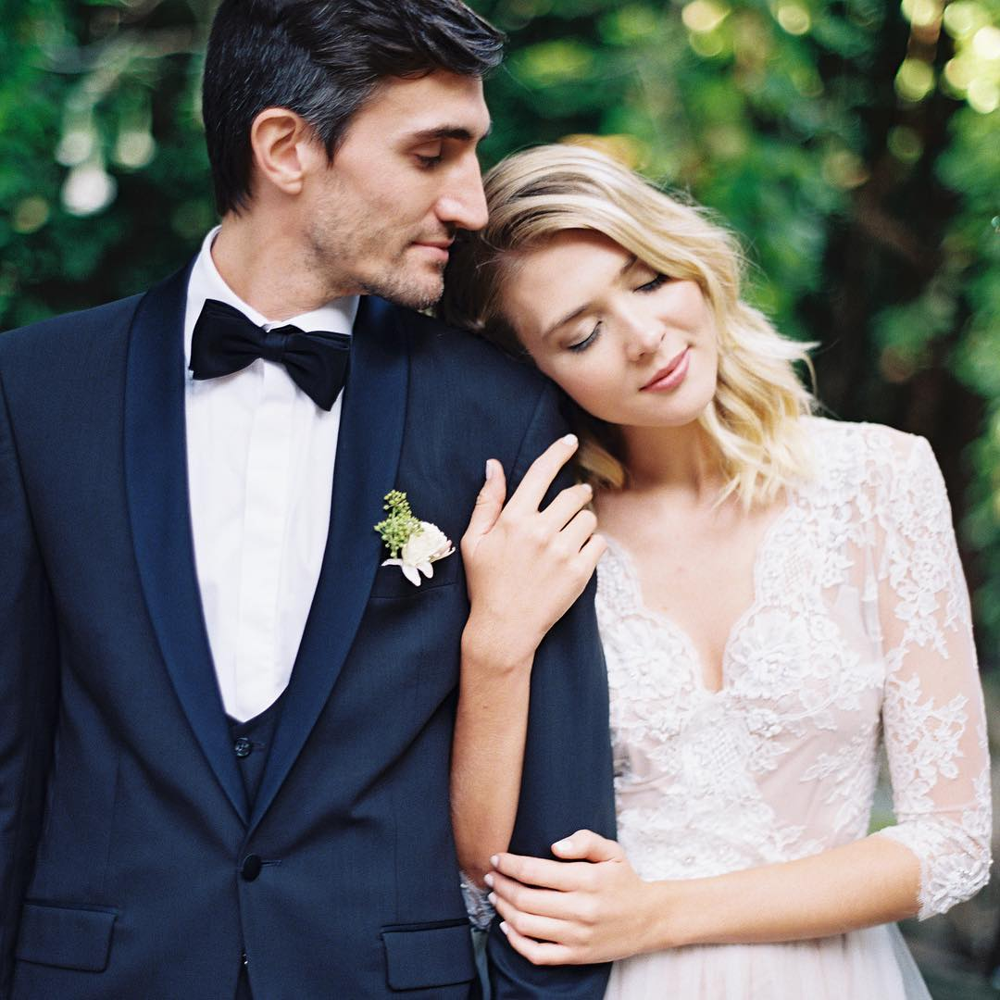

Engagements
London Engagement Photos
1 September 2016

This has to be one of the sweetest couples I’ve had the pleasure of meeting so far. The groom-to-be surprised his bride-to-be with an impromptu trip to London where he pampered her with professional hair and makeup (by the talented Sylwia Kunsyz) and hired me to come along to capture some of their special time together.
They were a little shy at first but after about 10 minutes of me breaking them in, they were complete naturals! This couple was seriously fashionable–they each had multiple outfit changes for the different scenery we encountered while strolling around the streets of Kensington. The coolest part of the day though?
The boats! It was extremely windy and he had to work super hard not to drift across the water, but i’d say it was worth it based on the cool photos we were able to get! Looking forward to seeing this couple again the next time they are in London!